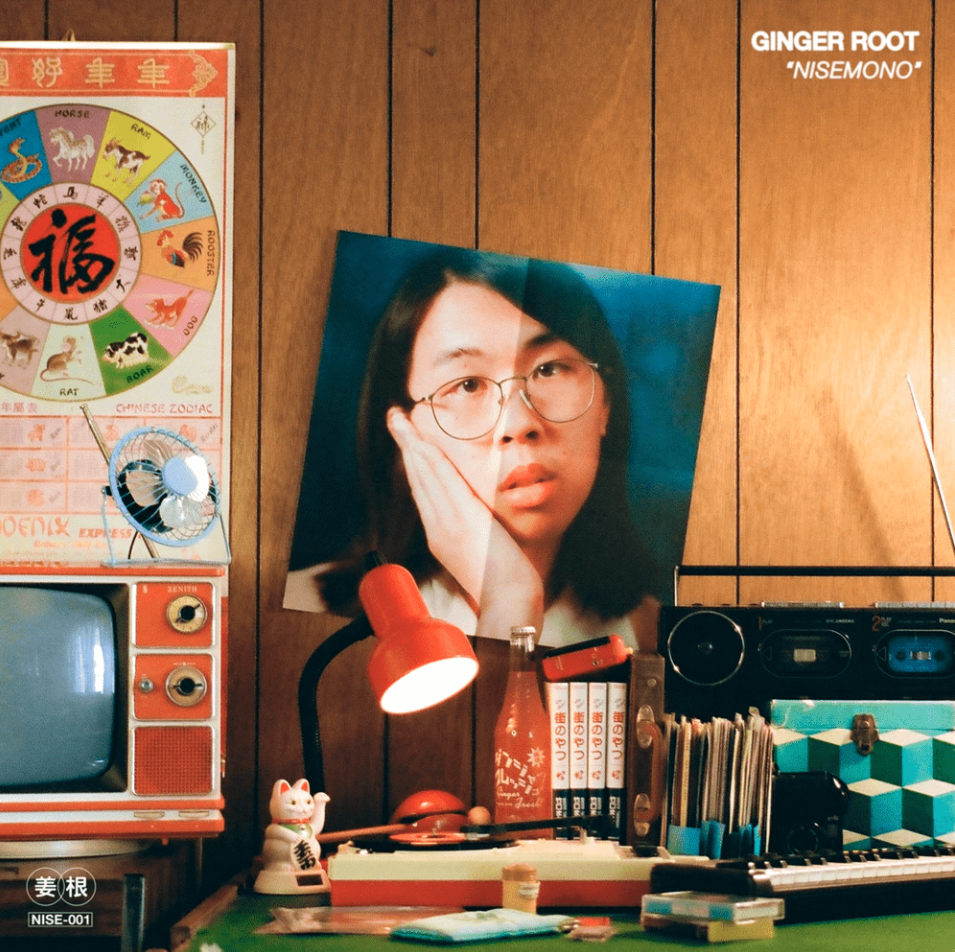

Ginger Root, the Best Indie Band Out There

Introduction

Where did my love for Cameron Lew Start?
I discovered Ginger Root
in the fall of 2022 and have been in love with their music ever since. The first song I had heard from them was Loretta, which is their most popluar song. It has 13 million views on youtube, and has been streamed 21 million times on spodify. After jamming to this song for a large portion of my life I dipped my toes into their album 'city slicker'. I wish so badly to go back in time to experience listening to these songs for the first time again. After I fell in love with this album, my love for this band has only grown. Now I know every song they have produced, and genuienly enjoy every single one, from most popular to least.
About Ginger Root

No. . . no not that kind of ginger root. Ginger Root is an American indie soul music project from Huntington Beach, California led by singer-songwriter and instrumentalist Cameron Lew. Lew has self-described the project's musical sound as "aggressive elevator soul", also citing inspiration as coming from groups such as Vulfpeck, Toro y Moi, White Denim, Yellow Magic Orchestra, and Feist. On tour, Ginger Root has supported bands such as Khruangbin, Hippo Campus, Omar Apollo and Last Dinosaurs, as well as headlining their own tour in Fall of 2022, with supporting artists King Pari, Vicky Farewell, and Amaiwana. In the studio, Ginger Root consists of solely Lew. On tour, Ginger Root also currently includes Lew's high school friends Matt Carney (drums) and Dylan Hovis (bass).
Current Favorite Song: Loneliness
Loneliness Lyrics:
You said I know what the seasons bring. You said it goes when those children sing, Oh, wait, it's only half-past noon, stay tuned. 'Til the time gets quicker, How to stand the wait. It's time to change your pace! Loneliness, Gone with your lying, Sayin' it ain't it- Oh, loneliness, You know why! Loneliness, Find it out later, Tryin' to be slick- Oh, loneliness, Say goodbye!
Well, no one told me when would things get real. Just walk on by and whisper, "What's your deal?" Oh wow, it's now half past two, so soon- 'Cause the time gets quicker. How to stand the wait, To stop and change your pace! Loneliness, Gone with your lying, Sayin' it ain't it- Oh, loneliness, You know why! Loneliness, Found it out later, Tryin' to be slick- Oh, loneliness,
Say goodbye! Loneliness, Gone with your lying, Sayin' it ain't it- Oh, loneliness, You know why! Loneliness, Found it out later, Tryin' to be slick- Oh, loneliness, Say goodbye!
The Best Ginger Root Albums
These two albums, Nisemono and City Slicker, are by far my favorite albums of all time. They are both relatively short but throw unique, charming and catchy 90's style pop/indie songs. I cannot reccomend these two enough, and it is suprising to note how these albums were created. Learn more about these albums here!Nisemono, The most underrated
City Slicker, Short, Sweet, Incredible

City Slicker Music Video
Juban District Music Video Here!
Copyright
I do not own any of this material on this page! Please support Ginger Root on their many differant platforms!